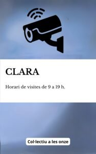
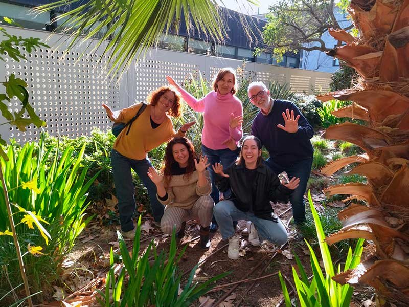
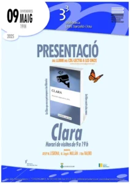

<?xml version="1.0" encoding="UTF-8"?><rss version="2.0"
	xmlns:content="http://purl.org/rss/1.0/modules/content/"
	xmlns:wfw="http://wellformedweb.org/CommentAPI/"
	xmlns:dc="http://purl.org/dc/elements/1.1/"
	xmlns:atom="http://www.w3.org/2005/Atom"
	xmlns:sy="http://purl.org/rss/1.0/modules/syndication/"
	xmlns:slash="http://purl.org/rss/1.0/modules/slash/"
	>

<channel>
	<title>historiascortas | Rita Valero</title>
	<atom:link href="./index.html" rel="self" type="application/rss+xml" />
	<link>../../../index.html</link>
	<description>Voz y palabras</description>
	<lastBuildDate>Thu, 11 Dec 2025 15:23:31 +0000</lastBuildDate>
	<language>ca</language>
	<sy:updatePeriod>
	hourly	</sy:updatePeriod>
	<sy:updateFrequency>
	1	</sy:updateFrequency>
	<generator>https://wordpress.org/?v=7.1.3</generator>

<image>
	<url>../../../wp-content/uploads/2021/08/cropped-favicon-rita-valero-32x32.jpg</url>
	<title>historiascortas | Rita Valero</title>
	<link>../../../index.html</link>
	<width>32</width>
	<height>32</height>
</image> 
	<item>
		<title>Clara, horari de visites de 9 a 19h</title>
		<link>../../../project/clara-horari-de-visites-de-9-a-19h/index.html</link>
					<comments>../../../project/clara-horari-de-visites-de-9-a-19h/index.html#respond</comments>
		
		<dc:creator><![CDATA[Rita Valero]]></dc:creator>
		<pubDate>Thu, 11 Dec 2025 15:18:54 +0000</pubDate>
				<guid isPermaLink="false">../../../index.html#038;p=1773</guid>

					<description><![CDATA[Clara: horari de visites de 9 a 19 h: un libro para abrir puertas de reflexión En un mundo que va demasiado deprisa, este libro nos invita a frenar, a mirar con la lentitud de quien espera noticias, de quien acompaña. Clara no es un libro cualquiera: es una obra nacida colectivamente, escrita a “diez [&#8230;]]]></description>
										<content:encoded><![CDATA[<h2><em>Clara: horari de visites de 9 a 19 h</em>: un libro para abrir puertas de reflexión</h2>
<p></p>
<p>En un mundo que va demasiado deprisa, este libro nos invita a frenar, a mirar con la lentitud de quien espera noticias, de quien acompaña. <em>Clara</em> no es un libro cualquiera: es una obra nacida colectivamente, escrita a “diez manos” por un grupo de personas unidas por la pasión de contar historias. Esa génesis ya le confiere un valor especial: cada voz aporta su propio color, su propia mirada, su propia emoción, y juntas construyen algo más grande que la suma de sus partes.</p>
<p><a title="Presentació de 'Clara', un llibre fet a 10 mans pel grup d' ..." href="https://www.palamoscomunicacio.cat/web/hemeroteca.php/1500022077/presentacio-de-clara-un-llibre-fet-a-10-mans-pel-grup-descriptura-de-palamos-collectiu-a-les-onze/1?utm_source=chatgpt.com" target="_blank" rel="noopener">palamoscomunicacio.cat</a></p>
<p>El punto de partida de la historia es conmovedor: una niña que sufre un accidente en un parque y queda en coma. Pero no estamos ante un relato forzado o sensacionalista, sino ante una serie de visitas: personajes diversos, reales o simbólicos, que entran y salen de su habitación de hospital. A través de esas conversaciones, silencios, confesiones, risas y lágrimas, el libro nos habla de fragilidad, de esperanza, de miradas distintas que convergen, de la vida vista desde el borde.</p>
<p><a title="Biblioteca Lluís Barceló i Bou - Palamós -" href="https://bibgirona.cat/biblioteca/palamos/agenda/110973-clara-horari-de-visites-de-9-a-19-h-del-col-lectiu-a-les-onze?day=2025-05-09&amp;utm_source=chatgpt.com" target="_blank" rel="noopener">bibgirona.cat</a></p>
<p>Un payaso que cumple Servicios a la Comunidad, una música que quiere que la protagonista participe en una canción, una influencer, un chico en silla de ruedas, una limpiadora, son algunos de los personajes que dan diversidad e integración a la historia.</p>
<p>Leer <em>Clara</em> es un ejercicio de sensibilidad: cada visita, cada capítulo, deja una huella distinta. Y al ser el libro fruto de un colectivo, esa multiplicidad de voces consigue retratar una realidad compleja con honestidad, sin artificios.</p>
<h2>El origen: un taller que germinó en proyecto compartido</h2>
<p>Detrás del libro está el <em>Col·lectiu a les onze</em>: un grupo surgido de los talleres de escritura creativa de la Biblioteca Lluís Barceló i Bou de Palamós.</p>
<div id="attachment_1774" style="width: 810px" class="wp-caption aligncenter"><p id="caption-attachment-1774" class="wp-caption-text">De izquierda a derecha y de arriba a abajo: Eli Vila, M. Angels Millan, Josep M. Lisbona, Rita Valero i Cristina Garcia</p></div>
<p>La idea de trabajar a varias manos nació con el deseo de experimentar: dialogar, negociar, conjugar estilos, tramas y sensibilidades. Como explican los propios autores, fue un ejercicio de generosidad: dejar los egos de lado, escuchar, adaptar, coherencia. <a href="https://podcasts.radiopalafrugell.cat/@Notesdeveu/episodis/la-biblioteca-de-palamos-presenta-clara-horari-de-visites-de-9-a-19-h-aquest-divendres" target="_blank" rel="noopener">radiopalaffrugell.cat</a></p>
<h2>Por qué vale la pena leerlo, o al menos consultarlo</h2>
<ul>
<li>Porque <strong>no está en venta:</strong> el libro no se encuentra en librerías abiertas al público, sino que se custodiará en la biblioteca. Esa decisión refuerza su carácter de obra comunitaria y de patrimonio local.</li>
<li>Porque el relato aborda una experiencia que toca: la vulnerabilidad, la esperanza, el paso incierto entre la vida que era y la que puede venir. Es un relato humano, cercano, que no da respuestas fáciles sino preguntas compartidas.</li>
<li>Porque recoge distintas voces, cada autor/a con su propio enfoque, y eso da riqueza: diversidad de miradas, de estilos, de sensibilidades. Esa pluralidad convierte la lectura en un viaje íntimo, pero colectivo.</li>
<li>Porque representa un triunfo de lo local: un grupo de personas que creyeron en un proyecto común, lo hicieron crecer con paciencia, generosidad y conexión con su comunidad.</li>
</ul>
<h2>Dónde encontrarlo</h2>
<p>El libro está disponible en la Biblioteca Lluís Barceló i Bou de Palamós, <a href="https://infopalamos.cat/esdeveniment/presentacio-del-llibre-clara-horari-de-visites-de-9-a-19-h-del-collectiu-a-les-onze/" target="_blank" rel="noopener">infopalamos.cat</a> no se comercializa en librerías, pero al tener diversos ejemplares, se puede pedir a través del Servicio de Préstamo Interbibliotecario, y te lo harán llegar a la biblioteca más cercana.</p>
<h2></h2>
<h2></h2>
]]></content:encoded>
					
					<wfw:commentRss>../../../project/clara-horari-de-visites-de-9-a-19h/feed/index.html</wfw:commentRss>
			<slash:comments>0</slash:comments>
		
		
			</item>
	</channel>
</rss>
